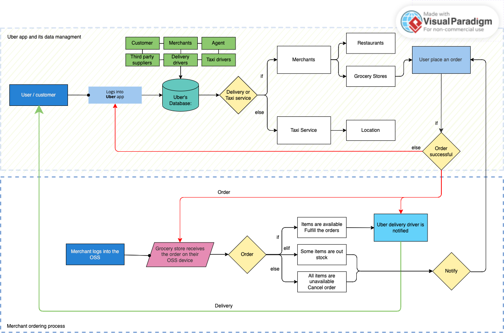
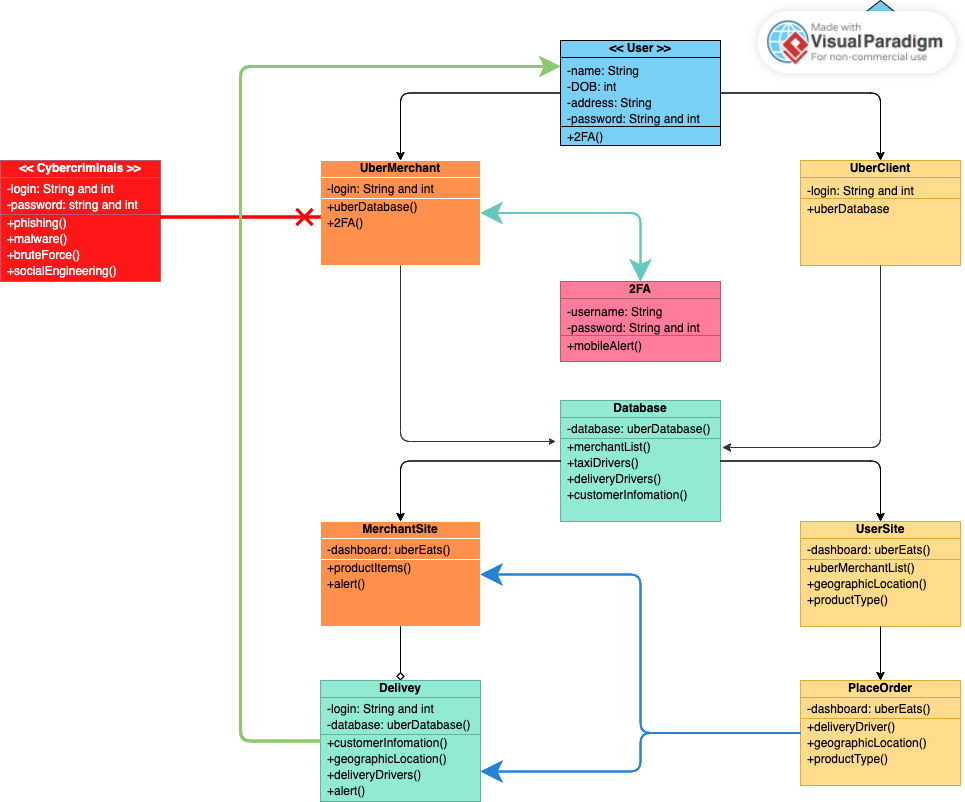
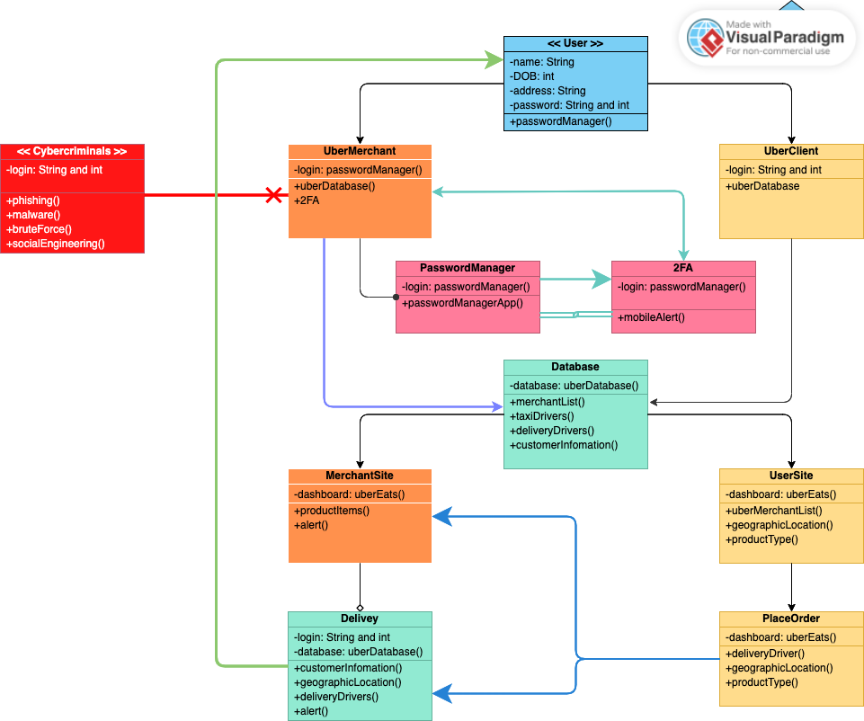

Introduction
A local grocery store has chosen Cyber IT Solutions Limited for its IT consultant; the company specialises in IT setup with cyber security prevention put in place. A specialist team of experts can recommend the correct network infrastructure, tools, and methods needed to increase productivity and operation, mitigating the risk of falling victim to a potential cybercrime.
Cyber Threats
It is essential to be aware that cybercriminals constantly develop new and innovative methods to infiltrate network systems, either by sending imitation emails which may look as if they come from authentic sources, which is known as phishing, or by using social engineering tactics that involve threat actors engaging with members of the team, including owners, agents, and suppliers, either by obtaining information available on popular social media platforms such as Facebook, LinkedIn, and X (formerly known as Twitter) to gain access to the company systems. These types of breaches can lead to the installation of malicious malware software, disrupting the company's operation or hindering the system with ransomware. Ransomware will lock a computer system with perpetrators demanding a ransom payment, threatening to have confidential data either made public or destroyed entirely within the computer data storage. A recent study suggested that ransomware attacks are one of the most frequently detected forms of cyberattacks, accounting for 68.42% of global detection (Petrosyan, 2023). Any cyberattack would have reputational damage to any organisation and could lead to fines for improper internal and external data management. GDPR is discussed further in the Data Protection section.
Research by Mijwil et al. (2023) suggests that cybercriminals will continuously develop new means of carrying out attacks on networks and devices by exploiting new and old vulnerabilities within those systems and devices. Further supporting evidence strengthens this statement. Sun et al. (2023) state that cybercriminals are unremittingly using these weaknesses within the software system to gain access for the Illicit acquisition of profits, emphasises one argument for having a robust risk assessment to tackle any potential cyber threat, with the ability to maintain and adapt existing and new technology by periodically testing systems for vulnerabilities as cybercriminals increasingly challenge modern designs for their unlawful gain.
Overview of client business.
A small grocery shop in the United Kingdom within the East London area is considering expanding its business to meet customers’ needs and demands. Until now, most customers have bought goods and items in-store, but since the COVID-19 pandemic, buyers' behaviour has shifted towards online purchases. There is supporting evidence to suggest this; according to the Office for National Statistics (2022), online purchases have continued to rise despite the increased cost of living. However, the rise in food prices has resulted in 48% of adults paying more for regular items; according to Coppola (2022), a survey taken in 2021 suggested that 42.6% of UK consumers will continue to purchase groceries online. May 2020 saw a massive growth of 11.2% compared to February, which was only 5.2%. Most recently, in June 2023, figures showed that there has been a slow decline of 8.5% in online food purchases. Despite this, online food purchases still had a significantly remained high pre-COVID. To keep up with market trends and customer demands, it is still possible for grocery stores to establish an online presence, even with an increase in the cost of living (Coppola, 2023).
Cyber threats within the country
The grocery store is in the United Kingdom, and one must consider the level of cybercrime within the country. According to research by Petrosyan (2023), in 2022, 33% of online users in the United Kingdom were victims of cybercrime. The National Crime Agency (2019) reported that ransomware attacks have grown; these attacks are directed not only towards businesses but also individuals, suggesting that cybercriminals see anyone or any business with an online presence as a potential target. In addition to ransomware attacks, there are other types of attacks, such as hacking, phishing, malware, and distributed denial of service (DDoS).
In cyber security, the term DDoS is a form of attack on websites, and cybercriminals send multiple requests to the website servers, outweighing their capacity and eventually rendering the website inaccessible to real users. DDoS attacks also fall under the Computer Misuse Act of 1990, meaning that any Distributed Denial of Service attack is considered a criminal act (National Crime Agency, 2020; Kaspersky, 2020).
Data Protection
Although the United Kingdom is no longer a part of the European Union (EU), it has been adopted into its laws of the United Kingdom. The Data Protection Act 2018 (DPA 2018) is currently in effect: any individual or business handling data, whether internal or external, must do so responsibly and abide by the General Data Protection Regulation (GDPR) (Gov.uk, 2018; Information Commissioner's Office, 2023).
The Proposal
Understandably, handling customer data can be overwhelming, particularly for new businesses that do not usually do so. With the height of cyber threats, this may seem even more daunting. To mitigate data handling, the grocery store can partner with a pre-existing delivery platform, such as Uber Eats, Deliveroo, or JustEats. Uber Eats is an ideal platform because it has a grocery delivery service as part of its business model (Uber.com, 2022).
To set up a merchant with Uber Eats, one fills in a standard form explaining the company and the type of produce they offer from the Uber Eats merchant site; acceptance usually takes a few days. There are also several fees, including activation and marketplace fees, that cover welcome kits, tablets, and professional photoshoots. The benefit of signing up for Uber Eats is that customers can access one online store geographically targeted to the local area. This is ideal for grocery companies because their target consumers are based in the East London area of the United Kingdom. Uber Eats also provides merchant support, an order management system, and insights into performance and opportunities (merchants.ubereats.com, 2023).
Using the Uber Eats platform, the grocery store can focus on its core business and growth while being assured of the secure data handling and protection provided by Uber Eats. However, it has been reported that Uber experienced a security breach in 2022. The hacker used social engineering to gain passwords from an Uber employee, which granted the hacker access to internal systems. The hacker compromised various systems and sent incident images through the company's slack channels. Uber (2022) claimed that an affiliate group of Lapsus$, a well-known hacking group, was responsible for this breach. This group previously targeted high-profile companies such as Microsoft, Samsung, and Cisco. Uber reported that all systems were operational and worked with local authorities. In 2016, Uber was attacked by ransomware. The hackers obtained 57 million data records and demanded a $100,000 payment to delete stolen data. Uber kept this breach hidden from authorities until its discovery in 2017. In 2018, Uber paid $148 million in settlement fees for failing to disclose the breach (Conger & Roose, 2022; Milmo & Agencies, 2022; Bhuiyan, 2022).
Judging from the information provided, one might be hesitant to use Uber Eats as a delivery service provider; however, the breaches did not compromise customers or suppliers, and the company has since reviewed its practices and upgraded its technology to prevent future attacks (Uber.com, 2022). The cyber breaches Uber experienced highlight that even large corporations can fall victim to cybercriminals. Uber struggled with compliance issues, including failure to safeguard internal data and provide adequate staff training to prevent phishing scams. Conducting appropriate risk assessments and regularly reviewing systems to avoid potential cyber threats is essential for mitigating future cyberattacks.
Fig 1. The above diagram is a flow map of customer orders and information sent to the merchant for fulfilment and delivery.
Threat Models
It is highly advisable for businesses that use order management systems to employ Two-Factor Authentication (2FA), also referred to as 2-step verification (2SV) or Multi-Factor Authentication (MFA) (National Cyber Security Centre, 2018). 2FA works by adding another layer of security to the user accounts; for example, when a user enters a password on Uber’s management system, verification will be sent to a non-related device, such as a mobile phone or smartwatch, to which the user will be prompted to approve, verify, or enter a passcode to authorise access. This method of security safeguards accounts; even if cybercriminals use brute-force attacks or social engineering to obtain account passwords, access will require the second step of verification, i.e., the user's mobile or smartwatch needed to authorise it; chances of threat actors having access to both password and mobile phone/smartwatch are relatively low (National Cyber Security Centre, 2017; Latto, 2023; Duo, 2023).
Fig 2. Above is the UML diagram of 2FA, which prevents users from accessing the system without authorisation. Notification is sent to a non-related device such as a mobile phone.
In cyber security, the term brute-force attacks refers to cybercriminals attempting to access an account using various methods, such as trial and error. They are forcefully trying to guess the password, and depending on its complexity, this can be done very quickly (Kaspersky.com, 2019).
The negative aspect of utilising Two-Factor Authentication is the additional device itself; because 2FA relies on the user's mobile phone or smartwatch, these devices are prone to losing battery life, being misplaced, or even stolen. According to the Office for National Statistics (2020), there were reports of 325,000 phone thefts in England and Wales from March 2010 to March 2020, making the 2FA process impractical. Depending on the 2FA application used, one must provide a personal mobile number that can be intrusive (Stegner, 2020). Another disadvantage of 2FA is that the process can be tedious and frustrating, especially for fast-paced industries such as restaurants and healthcare (Imperva.com, n.d.; Morris, 2023).
Although 2FA may have minor usability issues, the need for a secure system outweighs these concerns. A system breach could impact sales and customer loyalty, and for a small grocery store looking for expansion, it could significantly affect future endeavours.
The 2FA can be used alongside a password protection manager to enhance security further. Most users need to improve in creating passwords and often use memorable phrases or names and, in some cases, use the same password for multiple accounts. Such passwords are vulnerable to hacking because they can be easily accessed if listed in a dictionary using brute-force attacks or encryption methods (Bishop and Klein, 1995). According to Pearman et al. (2019), only a tiny minority utilise a password manager, instead opting for browser-based password managers (BPMs), such as Google Chrome, primarily because of its convenience and ease of use. However, these passwords often need to be stronger; typically, they are dictionary-based or reused. This further supports a survey by Bitwarden.com (2022) that, globally, only 34% use some form of password manager, and 32% reuse the same password across multiple sites.
Fig 3. Above is the UML diagram of Password Manager working alongside 2FA, adding another layer of security to the business.
The term dictionary attacks in cyber security refers to threat actors using familiar words and phrases in a dictionary to obtain access to a system or a user's account (Swinhoe, 2020).
Although browser-based password managers (BPMs) are convenient ways of storing and generating passwords, some vulnerabilities must be considered. Research conducted by Zhao and Yue (2023) suggests that threat actors can effortlessly decrypt the BPM-encrypted password of a user stored in the browser and access the website using the user's account information. This is further supported by Zakuskina (2023), who stated that the user password from BPMs is stored in a way accessible to cybercriminals because of how user passwords are stored within a folder path. The argument focuses solely on the Google Chrome web browser, which has the most significant global market share of 63.56%; however, vulnerabilities are also present in Mozilla Firefox and Microsoft Edge (Vailshery, 2023; Zakuskina, 2023). Many people who use password managers are genuinely concerned about security. Because the grocery store is a business concerned with growing cyber threats, it would be advisable to use a password manager. These tools can store and create nondictionary-based passwords, making them more difficult for cybercriminals. Furthermore, password managers can function alongside Two-Factor Authentication, providing an extra layer of security and reassurance.
Conclusion
To enhance the cybersecurity defence of a business against cybercriminals, implementing a Two-Factor Authentication (2FA) system in conjunction with a password manager is a highly effective measure against cyber threats. Both methods are user-friendly, simple to implement, and relatively cost-effective. According to Matthew-El et al. (2023), popular password managers, such as the Norton Password Manager and NordPass, offer free business plans or affordable monthly costs. Password managers allow users to save multiple passwords per account. Google and Microsoft also offer free 2FA services, which are easy to use and provide similar functionalities.
Moreover, off-the-shelf software such as Cisco Duo 2FA provides advanced features and insights that can be integrated into platforms outside of Google and Microsoft ecosystems (Duo.com, 2023). Regularly updating the software and passwords is crucial for maintaining security. It is critical to ensure that all team members with access to the system are adequately trained to identify phishing emails. Furthermore, it is highly recommended to implement cloud-based firewalls, antivirus software, and Endpoint Detection and Response (EDR) to reinforce business network security.